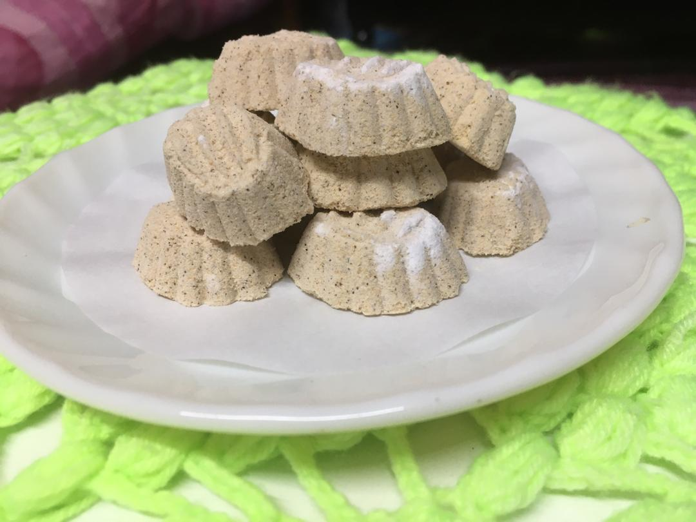
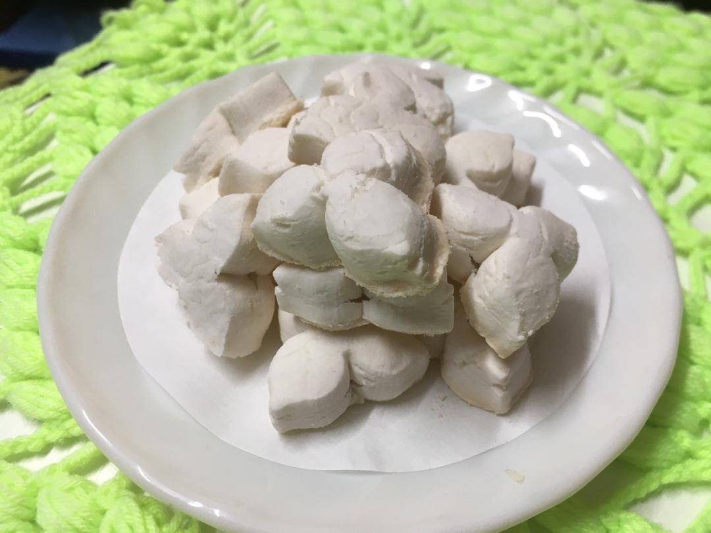

Special tips for Zurina cookies
There are some tips that Zurina Cookies have used for their cookies that make them are unique from any others cookies and can make their customer to feel satisfied with the cookies.First of all is Putu Kacang, this cookie needs to be baked under the sun, rather than using the conventional oven as it is traditionally made. There are only two ingredients used which is sugar and green bean that need to be lightly blended. The others one is Bangkit Puteh, the cookies are slightly different from the any others cookies. To ensure the dough continues to rise, it should be placed in the oven. When the cake has risen, it signifies that it has worked.

Tips for Putu Kacang
